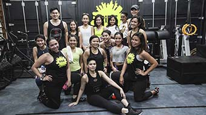

Halaman Web Multimedia Interaktif Klasika

Ride Jakarta
Bukan cuma waktu, kesehatan pun jadi aset berharga bagi masyarakat urban. Bisa dimaklumi kemudian jika pusat kebugaran kian menjamur di berbagai penjuru kota. Salah satu yang naik daun adalah boutique fitness studio. ▶

Eksplor Jawa
Pulau Jawa merupakan salah satu pusat kerajaan-kerajaan Islam terbesar di nusantara, ditemani Isuzu MU-X yang tangguh dan handal, simak penjelajahan Tim Kompas Eksplor berikut ▶
Passer Baroe
Pusat perbelanjaan tertua di Jakarta yang didirikan tahun 1820 ini bertahan selama 2 abad, bagaimana geliatnya saat ini ? ▶